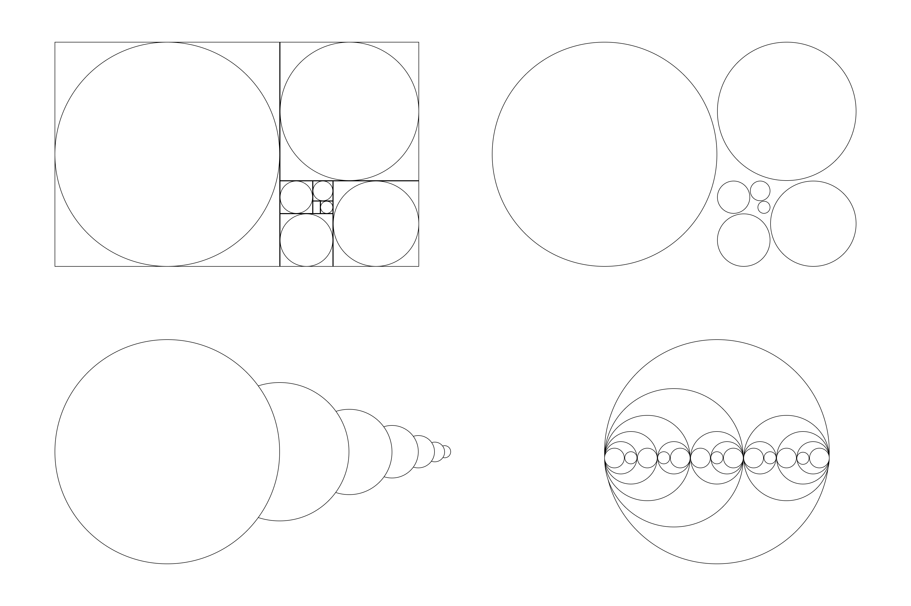

I explored the Fibonacci Sequence's spacing and sizing system. The primary goal of this project was to learn from the sequence's natural aesthetic appeal and space management insights.
White space is incredibly important in digital design. Being able to manage and divide space well helps users understand the structure of the interface, increases readability, and brings emphasis to select elements of the design. Spacing holds the design together, and it was very important for me to develop a better intuition in this domain.